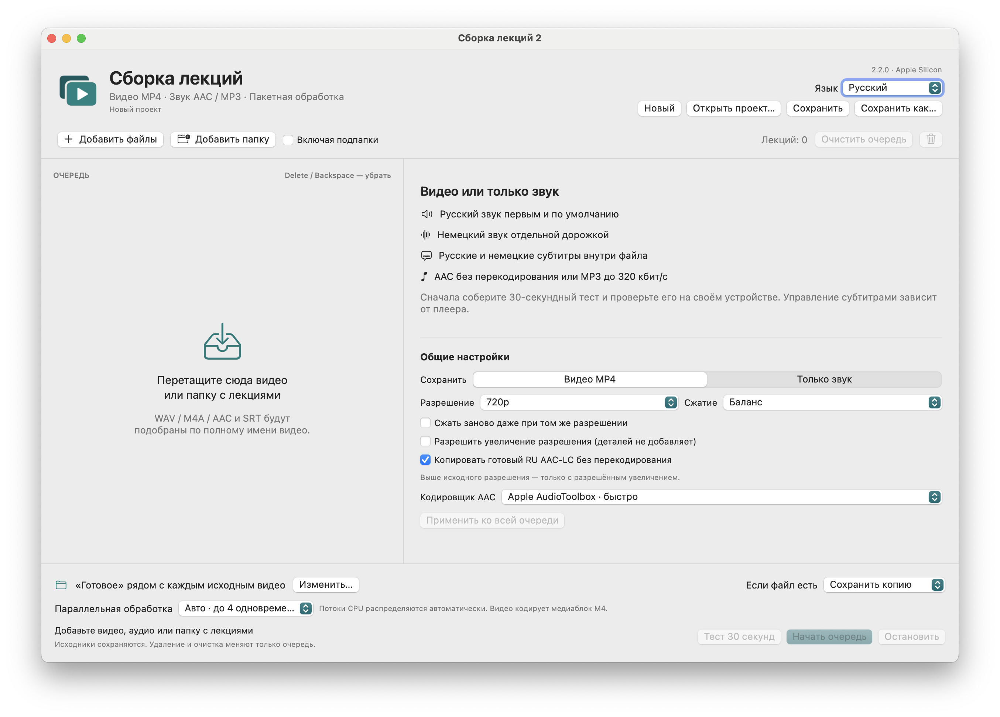

macOS 14+ · Apple Silicon
LectureMerge
Объединяет видео лекции, озвучку, исходное аудио и субтитры в MP4; также экспортирует аудио.
Выпуск · 2.2.0Перед запускомОбработка локальная; внешний сервис не нужен. Приложение подписано ad-hoc и не нотарифицировано Apple.


Как это работает
- Видео + озвучка + субтитры
- Проверить параметры
- Сохранить MP4
Первые шаги
Распакуйте архив приложения, добавьте видео, аудио и субтитры. Проверьте 30-секундный фрагмент перед полным экспортом.